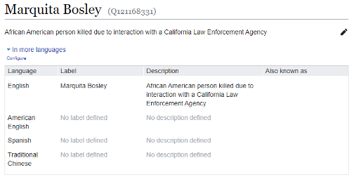
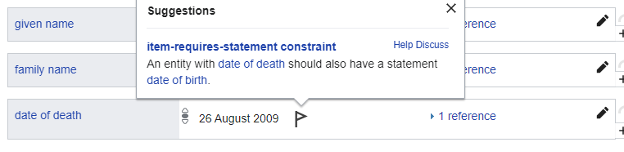
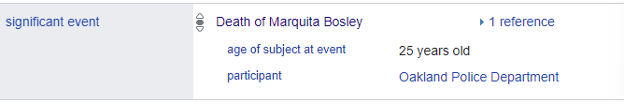
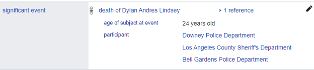
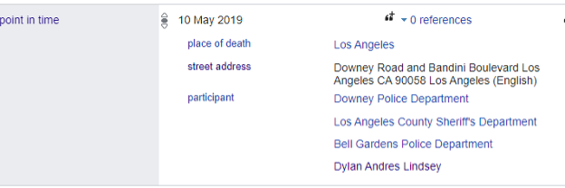
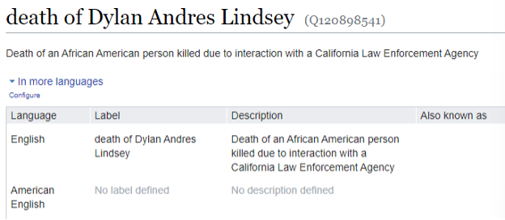
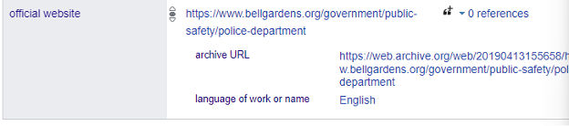

Wikidata Notes
There are three types of records within Wikidata that I imported within the past six weeks.
Record type # 1
Victim records: Using the CA Fatal Encounters spreadsheet from Github, I worked specifically with fields that were filtered for “Race Imputation = African American” which was 819 records. These records contain basic information about the victim and include the following fields:
| Wikidata Property | Wikidata Value | Usage Note | Field used from Sprdsht |
|---|---|---|---|
| instance of (P31) | human (Q5) | n/a | |
| sex or gender (P21) | female (Q6581072), male (Q6581097), trans man (Q2449503), trans woman (Q1052281) | Gender | |
| country of citizenship (P27) | United States of America (Q30) | n/a | |
| given name (P735) | Victim’s first name | First name | |
| family name (P734) | Victim’s last name | Last name | |
| date of death (P570) | YYYY-MM-DD | The date the victim died | Date of death (YYYY-MM-DD) |
| place of death (P20) | city (Q515) street address (P6375) | City where the victim died Physical address of significant event (if available) | City Full address |
| manner of death (P1196) | homicide (Q149086) | Each incident is defined as a homicide based on information from https://fatalencounters.org/ | n/a |
| cause of death (P509) | ballistic trauma (Q2140674), fall (Q11620540), car collision (Q61037771), strike (Q3242199), drowning (Q506616), asphyxia (Q193840), electrical injury (Q244404), drug overdose (Q3505252), medical emergency (Q2751242), undetermined (Q15054664) | The highest level of force used by California Law Enforcement Agencies | Manner of death |
| ethnic group (P172) | African Americans (Q49085) | At this time we are currently working with one group of victims; as more groups are added, values will be updated | Race with imputations |
| significant event (P793) | Death of [victim’s name] age of subject at event (P3629) participant (P710)=law enforcement agency (Q732717) | Wikidata page that lead to corresponding incident of person’s death Age of the person at the time of significant event The California Law Enforcement Agency that participated in the death of the victim | Significant event name Age Lea Lea 2 Lea 3 |
| described at URL (P973) | https://fatalencounters.org/ language of work or name (P407) = English (Q1860) retrieved (P813) YYYY-MM-DD | For summer 2023 project - 7/10/23 was used at retrieved date | n/a |
| on focus list of Wikimedia project (P5008) | Wikidata: WikiProject Systemic Racism Knowledge Graph (Q120754096) | Wikidata Project that ties California Law Enforcement Agencies, Victims, and Significant Events together | n/a |
Notes:
- date of death had to be formatted to YYYY-MM-DD which was done through OpenRefine – edit cells – common transformations – to date
- Manner of death listed as “Vehicle” – Wikidata did not like this field and advised it did not make sense with the data we were importing. Any records listed as “Vehicle” were changed to “Car Collision”
- Full names of victims (full name field) had to be separated into multiple columns for first, middle, last names, and nicknames. The names were split by through OpenRefine – edit column – split into several columns. The decision was made so a sort (if necessary) could be run against records in wikidata by first or last name.
- The full name column is now formatted as Firstname M.I. LastName. Nicknames and aliases were removed. This is the label for the victim records. Ex.

- There is only one property within wikidata victim records that is flagged. Date of Death. When using this property, wikidata would like to see a Date of Birth property. We did not have that information.
 - Significant event property: this property contains three different statements and this had to be done to remove constraint violations within wikidata.
 - Place of death property: this contains a qualifier that lists the full street address of where the victim died. Not all records have a full address, if no address is provided, this will pull closest streets, city, or county.

- Law enforcement agency is the “Participant” property within wikidata. There are three separate fields on the spreadsheet and schemas because there are a several records where multiple law enforcement agencies were involved.

Record type # 2
Significant Event records: Using the CA Fatal Encounters spreadsheet from Github, I worked specifically with fields that were filtered for “Race Imputation = African American” which was 819 records. These records contain basic death information about the victim and participating law enforcement agency and include the following fields:
| Wikidata Property | Wikidata Value | Usage Note | Field used from Sprdsht |
|---|---|---|---|
| instance of (P31) | homicide (Q149086) ballistic trauma (Q2140674), fall (Q11620540), car collision (Q61037771), strike (Q3242199), drowning (Q506616), asphyxia (Q193840), electrical injury (Q244404), drug overdose (Q3505252), medical emergency (Q2751242), undetermined (Q15054664) | Each incident is defined as a homicide based on information from https://fatalencounters.org The highest level of force used by California Law Enforcement Agencies | n/a Manner of death |
| coordinate location (P625) | city (Q515), county (Q28575), census-designated place in the United States (Q498162), street address (Q24574749) | GPS location where the victim died | Lat_lon |
| point in time (P585) | date of death (P570) place of death (P20) street address (P6375) participant (P710) [name of victim] | The date of the incident where the victim died City where the victim died Physical street address where the victim died The California Law Enforcement Agency that participated in the death of the victim. * There can be multiple agencies that are involved This will be the Wikidata page of the victim e.g. https://www.wikidata.org/wiki/Q121140148 | Date of death (YYYY-MM-DD) City Full address Lea Lea 2 Lea 3 Full name |
| on focus list of Wikimedia project (P5008) | Wikidata: WikiProject Systemic Racism Knowledge Graph (Q120754096) | Wikidata Project that ties California Law Enforcement Agencies, Victims, and Significant Events together |
Notes:
- To eliminate constraint violations within wikidata – a point in time property had to be used. The point in time property includes date of death, place of death, full address of death (if available), participant (law enforcement agency), participant (victim)
 - Coordinate location property: if there is no full address available, the location is pointing to the city where the victim died.
- Instance of property: 125 records were changed from “Vehicle” to “Car Collision” as cause of death.
- Significant event label – uses the significant event name field – this is used to search for the record.

Record type # 3
CA law enforcement agency records: Using the CA LEAspreadsheet from Github, I worked will all records on within the file. These records contain basic information about the participating law enforcement agency and include the following fields:
| Wikidata Property | Wikidata Value | Usage Note | Field used from Spreadsheet |
|---|---|---|---|
| instance of (P31) | law enforcement agency (Q732717) | n/a | |
| country (P17) | United States of America (Q30) | n/a | |
| located in the administrative territorial entity (P131) | county of California (Q13212489) | County of stated law enforcement agency e.g. Alpine County | County |
| coordinate location (P625) | geographic coordinate (Q104224919) | Latlon | |
| headquarters location (P159) | city in the United States (Q1093829), census-designated place in the United States (Q498162) | City or designated place of stated law enforcement agency e.g. Markleeville | City |
| official website (P856) | URL (Q42253) archive URL (P1065) language of work or name (P407) = English (Q1860) | URL to stated law enforcement agency official website e.g. https://www.cityofchowchilla.org/176/Police-Department archived URL for law enforcement agencies official website e.g. https://web.archive.org/web/19981202190615/http://www.lapdonline.org/ | Site url Webarchive site url |
| on focus list of Wikimedia project (P5008) | Wikidata: WikiProject Systemic Racism Knowledge Graph (Q120754096) | Wikidata Project that ties California Law Enforcement Agencies, Victims, and Significant Events together | |
| documentation files at (P10527) | Policy Manuals (Q121352506) described at URL (P973) retrieved (P813) | URL to stated law enforcement agency policy manual date policy was pulled from data source (format YYYY-MM-DD) | Policy manual 2023-07-10 |
Notes:
- To eliminate constraint violations within wikidata for official website property. A separate archive url had to be used if an archived website was available. Also “Language of work or name property” needs to be used to prevent constraint violation.

- Coordination location points to the Headquarters location of the law enforcement agency.
- There are law enforcement pages that have been created by other users – data from the schema above has been added to those records.
Sources
Burghart, D.B. (2020). Fatal Encounters: A step toward creating an impartial, comprehensive and searchable national database of people killed during interactions with police [data file and codebook]. https://fatalencounters.org/
Williams, C., Coleman, C., and Colmenares, A. (2023). California Law Enforcement Agencies. Stanford Digital Repository. Available at https://purl.stanford.edu/dj529nn1168. https://doi.org/10.25740/dj529nn1168.
Open Refine to Wikidata Schema
Victim schema –
Incident schema –
Lea schema – Available on Github here: https://github.com/know-systemic-racism/ca-leas-data/
Wikidata links
- WikiProject page:https://www.wikidata.org/wiki/Wikidata:WikiProject_Systemic_Racism_Knowledge_Graph
- Law Enforcement schema: https://www.wikidata.org/wiki/Wikidata:WikiProject_Systemic_Racism_Knowledge_Graph/Law_Enforcement_Agency_Schema
- Victims schema: https://www.wikidata.org/wiki/Wikidata:WikiProject_Systemic_Racism_Knowledge_Graph/Victims_Schema
- Incident schema: https://www.wikidata.org/wiki/Wikidata:WikiProject_Systemic_Racism_Knowledge_Graph/Significant_Incident_Schema
Example pages:
- Example of victim wikidata page: https://www.wikidata.org/wiki/Q121168331
- Example of incident wikidata page: https://www.wikidata.org/wiki/Q121097141
- Example of law enforcement wikidata page: https://www.wikidata.org/wiki/Q120751316
Wikidata Queries
- All records associated with our wikidata project “Wikidata: WikiProject Systemic Racism Knowledge Graph”: https://w.wiki/7GmN
- All records associated with victims run the following query in wikidata: https://w.wiki/7GmH
- All records associated with significant events run the following query in wikidata: https://w.wiki/7GmQ
- All records associated with LEAs run the following query in wikidata: https://w.wiki/7GmR